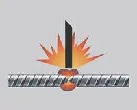
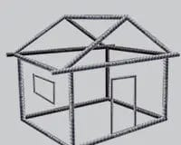
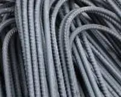
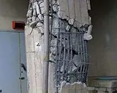

Rajuri 500 Bars are reputed for their unique ductility and corrosion-resistant properties.
As the manufacturing process utilizes HSE Thermex technology from Germany, it has elongation values that give it excellent bend properties.
The bars are strongly corrosion-resistant because the carbides that commonly cause corrosion do not form because of controlled water cooling. Improved corrosion resistance is also a result of the absence of surface stress from the cold twisting process.
There are several attributes that knowledgeable customers appreciate about Rajuri 500 Bars. In addition to ductility and anti-corrosive properties, these are:
With Rajuri 500 Bars, the weld joints stay strong because the steel has a carbon content less than 0.25%, making it suitable for butt and other weld joints. Manual arc welding also is easier as pre-heating and post heating are not required.

Rajuri 500 Bars are particularly recommended for areas where higher temperatures ( 400 to 600 deg. C) are likely such as in chimneys. They have the required thermal stability unlike Torsteel and CTD bars.

The higher ductility of a RAJURI 500 Bar makes it better resistant to quakes.

The excellent workability of a Rajuri 500 Bar is on account of its high elongation values and its consistency properties all along the bar’s length.

With a rigorous quality inspection process in place, RAJURI 500 Bars achieve a chemical composition whereby they show no tendency of embrittlement either during welding or cold deformation of welded joints.
RAJURI 500 Bars bring down your steel consumption by 15-20% and they cost about 5% more than CTD bars, thus they yield an overall saving of 10-15%.